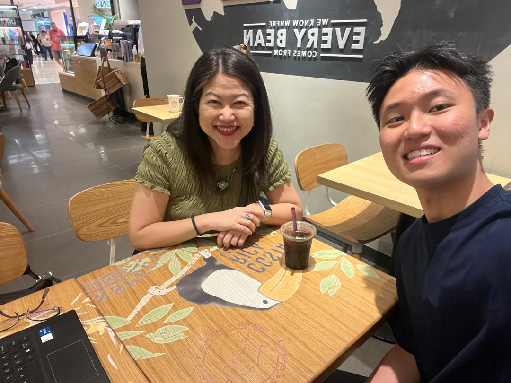
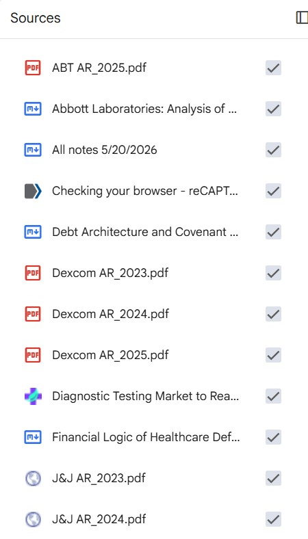
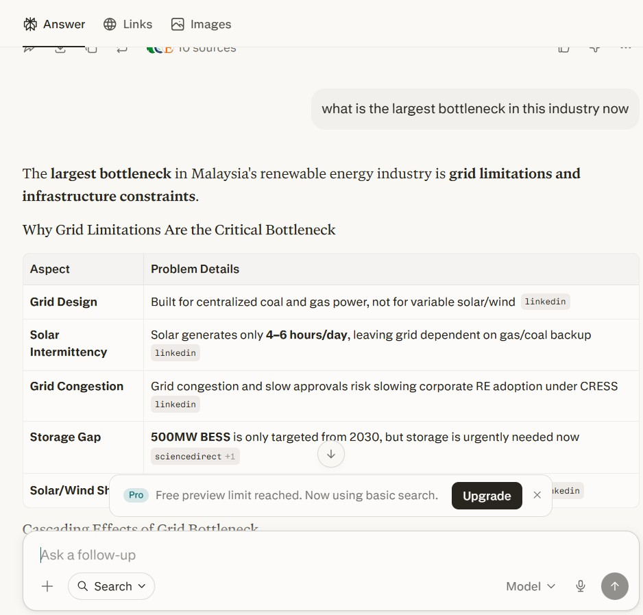
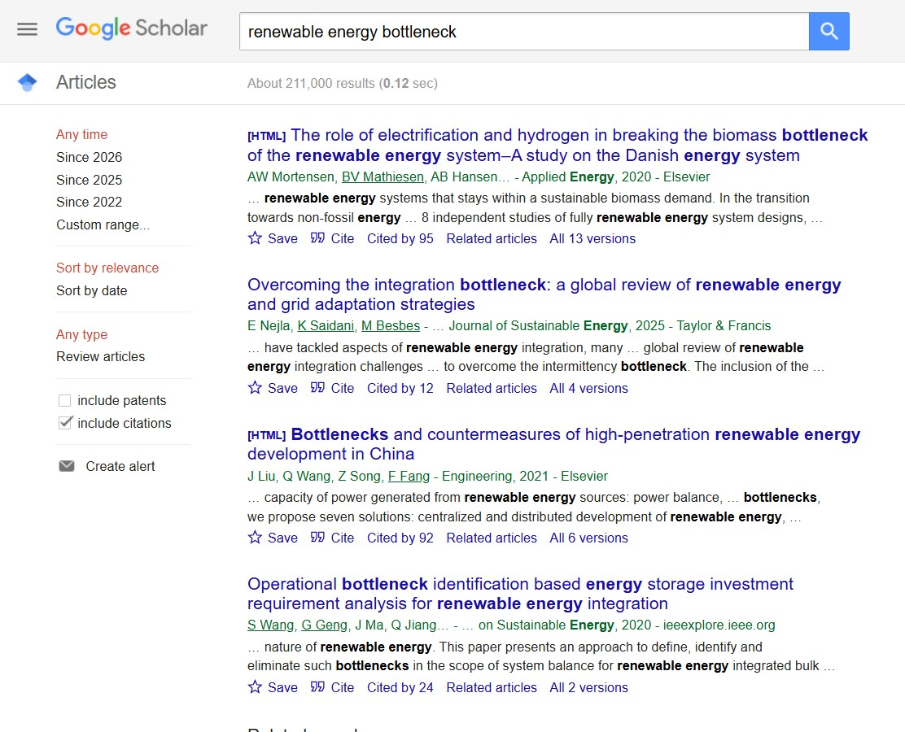

Portfolio
Zavier Lee
Finance & Investment Analysis.
Explore. Direct. Act.
Life is the continuous translation of thought into action. Know your drives and seek your North Star, but do not be grounded by the absence of a perfect map. Only through motion do you generate the new inputs that will serve as your compass.
My Journey.
A visual ledger of my professional ventures, policy engagements, and creative disciplines.

Profile
Research Competition
Presenting fundamental valuation insights at the Budding Value Investor Award.

Venture: GEMA
"Projek 30" Podcast
Orchestrating deep-dive conversations with Malaysian industry leaders to map the socio-economic ecosystem.

Creative Discipline
24 Festive Drumming
Synchronized execution and rhythmic composition on the main stage.

Venture: GEMA
Semiconductor Forum 1.0
Deepening technical understanding of the global supply chain and local fab capacities.

The Workflow
Moments of Pause
Fueling late-night DCF modeling, deep-research, and startup strategy sessions.

Public Policy
Selangor State Exco
Bridging the gap between government initiatives and private sector realities.

Venture: GEMA
Semiconductor Forum 2.0
Engaging with industry experts to track macro developments in tech.

Performance
Orchestrating Rhythm
Composing and executing original pieces for an audience of over 500 guests.

Venture: GEMA
Industry Connections
Translating policy and sector research into real-world professional connections.

Venture: GEMA
Policy Advocacy
Presenting structural financing recommendations to PTPTN officers to address national student debt.

Creative Discipline
Competitive Execution
Where complex planning meets high-stakes delivery.
Strategic Ventures
Arvia
Founder "Seemingly irrelevant data silos cost SMEs immense value through operational drag and invisible financing barriers."
The Connection Gap
Every month, the owner of a Malaysian SME does three things manually that should be automatic: they chase customers who haven't paid, they reconcile bank statements against invoices one by one, and they walk into a bank and get rejected because they have no collateral — even though they have been paying suppliers reliably for years. None of these problems exist because the SME is badly run. They exist because the data that proves the business is healthy sits in three places that don't talk to each other: the accounting software, the bank account, and the customer's payment history.
The Orchestration Pipeline
Your financial data already exists — invoices sent, payments made, bank transactions recorded — but it sits scattered across systems that never talk to each other. Arvia builds the connection layer between all of it, automating reconciliation, giving you a live view of who owes you and when, and structuring your payment behavior into a verified financial identity. The result is a business that runs on real numbers instead of gut feel — and a track record that banks can finally read.
Real-Time
Liquidity
See exactly where your capital is deployed or available in real-time.
Operational
Efficiency
Your staff spends time on financial analysis rather than manual firefighting.
Institutional
Bankability
Structure historical payment behavior to build institutional trust without hard collateral.
Architecture
Built as a Technical Service Provider (TSP), Arvia orchestrates data without directly holding funds, neutralizing regulatory risk. The platform is currently in its early stages of beta development and insights gathering.




GEMA Malaysia
President & Co-Founder
The Mission Addressing the awareness gap in Malaysia's semiconductor ambitions by connecting youth with industry leaders, academia, and policymakers through education, community engagement, and policy research.
Convening Sectors
Organized two major Semiconductor Forums over two years with Monash University and Universiti Malaya. Hosted 3 expert panels featuring 7 speakers (e.g., NXP, Selangor State Govt) to discuss global value chain positioning with 150+ participants.
Digital Education
Scaled the platform to 250+ followers, generating 100,000+ views across 55+ original posts. Produced the "Projek 30" podcast series, accumulating 10,000+ views to demystify complex technical and policy subjects.
Policy Advocacy
Spearheaded a youth-driven policy paper addressing structural issues in the PTPTN financing system. Analyzed 200+ survey responses and drafted three actionable recommendations intended for ministerial submission.
Organization Building
Recruited and led an 8-person core team across operations, partnerships, and program delivery. Established scalable internal processes to transition GEMA into a sustainable institution.
Established a recognized cross-sector nexus that actively integrates young Malaysians into the national dialogue on talent development and industrial strategy.

Research & Publications
Market Commentary
What My Initiative Has Taught Me About Selling Into Malaysian B2B Market
Building an SME solution led me to conversations with industry leaders that revealed the underlying operating system of Malaysian SMEs and its impact on innovation.
Read on Substack
Equity Research
Westports Holdings Berhad
CFA Institute Research Challenge report. Institutional-grade valuation factoring in global logistics disruptions like the Red Sea crisis.
Read Equity Report
Equity Research
Abbott Laboratories (ABT)
Deep-dive evaluation of operating segments (Medical Devices, Diagnostics), assessing post-pandemic revenue normalisation and legal headwinds.
Read Equity Report
Sector Intelligence
EV Battery Supply Chain & CATL
Comprehensive analysis of the global battery supply chain, raw material economics, and a presentation deck detailing CATL's market dominance.

Sector Intelligence
Renewable Energy Ecosystem
Market research mapping the ASEAN Power Grid and utility-scale solar infrastructure, analyzing capital allocation, and profiling key players.
Read Market Report
Macroeconomics & Policy
Gender Pay & Maternity Leave
Position paper co-authored for the Association of Malaysian Economics Undergraduates (AMEU) addressing the economic impact of the care burden and systemic wage gaps.
Read Policy PaperHow I Use AI in Financial Research and Analysis
I use AI not as a content generator, but as a research and analytical accelerator that expands the scope and depth of my work while keeping decision-making firmly human-led.
NotebookLM
Multi-document analysis & cross-comparison
Financial research was constrained by the need to manually read and retain large volumes of annual reports, making it difficult to consistently track changes in narratives, assumptions, and cross-company differences over time.
I use NotebookLM to conduct structured, multi-document analysis across annual reports, investor presentations, and earnings materials. Instead of reading sequentially, I interrogate documents through targeted analytical questions such as:
- What is driving revenue and margin changes over multiple reporting periods?
- How has management’s tone and strategic priorities evolved over time?
- How do competitors differ in pricing strategy, cost structure, and capital allocation?
- What accounting assumptions or disclosure practices have shifted, and what does that imply?
This workflow allows me to quickly surface patterns, inconsistencies, and divergences across companies and time periods. AI handles retrieval and cross-referencing across large text sets; I focus on interpreting implications and forming investment-relevant insights.


Sources




Perplexity + Google
Broad discovery followed by source verification
Research was primarily keyword-driven, relying on manually searching and filtering through large volumes of articles and reports, which often reflected only the ideas I already knew to look for.
I use Perplexity as an initial discovery layer to map the information landscape, surface relevant reports, and identify perspectives or risks I may not have considered. This helps reduce “search bias” inherent in traditional keyword-based research.
I then shift to Google and primary sources to validate findings by reviewing original filings, reports, and credible industry materials. AI expands breadth; I ensure depth and accuracy through verification and direct source analysis.
Claude & Gemini Canvas
Structuring and execution of output
A significant amount of time in research projects was spent translating already-developed ideas into structured presentations, reports, and slides, which is often repetitive and low marginal value.
I use Claude and Gemini Canvas as execution tools to convert structured thinking into professional output. I provide the core logic, arguments, and evidence, and use AI to accelerate formatting, structuring, and drafting of materials such as investment memos or presentations.
This shifts my focus from manual document production to higher-value work such as refining arguments, stress-testing assumptions, and improving the clarity of insights.


Overall Approach
Across all tools, my workflow is built on a consistent principle:
- AI is used to expand information processing capacity, not to replace analytical judgment.
- It accelerates information retrieval, synthesis, and structuring, while I remain responsible for hypothesis formation, validation against primary sources, and final interpretation.
- The outcome is not faster output alone, but a broader and more systematic research process that allows me to identify insights that are difficult to surface through traditional manual workflows.
Institutional Ledger
Experience
CFA Futures Mentorship Program
Mar 2026 - Jun 2026Mentee (Renewable Energy Research)
Mentored by a Vice President from an international investment bank. Focused on deep-dive research into renewable energy infrastructure, producing comprehensive deliverables on ecosystem mapping, deal farm-downs, and commercial structuring.
Cooling-as-a-Service (CaaS)
Sector Intelligence & Deal Structuring
Commercial Drivers & Pricing
- Zero CAPEX: Eliminates balance sheet burden for non-core infrastructure.
- Precision Cooling: Bridges the technical gap for Data Centers (RM/kW IT Load).
- Revenue Models: RM/RTh variable fees vs. fixed capacity reservation floors.
Market Landscape & Case Studies
- Kaer: Exchange TRX (On-Site, RM 150M, 15 yrs)
- KJTS Group: KIPMall (On-Site, RM 23M, 20 yrs)
- TNEC: KLIA (District Cooling DCS, RM 183M, 20 yrs)
Renewable Energy Market Research
Sector Intelligence & Capital Allocation
Macro Themes & Regional Pipelines
- ASEAN Power Grid: Cross-border grid interconnectivity economics and transmission playbooks.
- CGPP & LSS Quotas: Tariff architecture and allocation dynamics of merchant green solar assets.
- JS-SEZ Energy Strategy: Localized energy infrastructure moats inside the Southern special zone.
Capital Dynamics & Corporate Moats
- Infrastructure Movers: Tracking asset recycling, grid expenditure, and farm-downs for TNB, Solarvest, and Gentari.
- Cypark Case Study: Tactical structural assessment of major utility consolidation deals.
- BESS Architecture: Financial viability and pipeline economics of utility-scale storage projects.
Sunway University
OngoingProgramme Initiator (V.A.S.T. Amplifier)
Partnering with Programme Architect Penny Leong to close the graduate transition gap. We are applying academic self-leadership research to structure the Total Enrichment Advisory (T.E.A.), shifting students from aimless complexity to actionable value expression.
The V.A.S.T. Amplifier Project
Total Enrichment Advisory (T.E.A.)
The Core Reframe
- The Missing Compass: Bridges the gap between graduate exposure and actual execution.
- Self-Leadership Focus: Shifts focus from simply acquiring access to actively building an internal compass.
- Tangible Value: Teaches students to move with conviction and demonstrate value before landing a role.
3-Day Program Architecture
- Day 1 (Direction): Mapping strengths using the R.E.A.L. framework to produce a Competency Blueprint.
- Day 2 (Expression): Reframing communication anxiety into a recorded 60-second Personal Value Pitch.
- Day 3 (AI Execution): Conducting AI-augmented target company research to build a strategic value proposal.
AHAM Asset Management
Jan 2026 - Apr 2026Intern
Executed 9-week financial reconciliation and systematically automated performance data tracking across hundreds of channels.
Selangor State Exco
Jan 2025 - Mar 2025Political Intern
Investment, Trade & Mobility division. Drafted public speeches and bridged government-private sector dynamics through stakeholder meetings.
Education
Sunway University
BSc (Hons) in Financial Analysis
- CGPA: 3.94 / 4.0
- Book Prize Winner (Financial Statement Analysis)
- Sunway Ace Scholarship
Sunway College
Australian Matriculation (AUSMAT)
- ATAR: 97.25
- Best Subject Award in Economics
Catholic High School, PJ
Sijil Pelajaran Malaysia (SPM)
- 10 A+
Certifications & Awards
2024 Budding Value Investor Award (BVIA)
Grand Prize Winner
Awarded the Grand Prize in a rigorous equity research competition. Conducted deep-dive fundamental analysis and developed a comprehensive value-driven investment thesis to secure the top position among participating universities.


Chartered Financial Analyst (CFA)
Level 1 Passed
Successfully cleared the rigorous CFA Level 1 examination, establishing a strong foundation in quantitative methods, economics, financial statement analysis, and portfolio management.
INSEAD & Prudential NextGen Academy
Upcoming: 3-Day Executive Education
Selected to participate in an intensive, collaborative program hosted by INSEAD and Prudential, focusing on strategic leadership, wealth transition, and enterprise growth frameworks.
The Reading Ledger
Mental models, value investing philosophies, and fundamental principles currently shaping my perspective.

Shoe Dog
Phil Knight

100 Baggers
Christopher Mayer

7 Habits of Highly Effective People
Stephen R. Covey

The Essays of Warren Buffett (6E)
L. Cunningham

How to Win Friends & Influence People
Dale Carnegie


Influence
Robert Cialdini

Poor Charlie's Almanack
Charlie Munger
Research & Advisory Services
As an independent analyst, my strength lies in connecting the dots amidst the noise. I structure complex market variables into actionable, institutional-grade insights tailored to the Malaysian ecosystem—spanning renewable energy, SME digital transformation, and macro-policy shifts.
Tier I
Preliminary Intelligence
"Clean, evidence-based answers to ‘Should we invest our time and capital into this or not?’ before committing significant resources."
A rapid-turn market pulse built for local founders, scaling SMEs, family offices, and foreign investors who need to map a localized opportunity in Malaysia without the corporate bloat.
4 Core Questions We Answer
Is the local demand real?
A sharp look at current market sizing, growth drivers, and whether Malaysian buyers are actually looking for a solution.
Who owns the ground right now?
Identifying the dominant local or regional players, how they are positioned, and exactly where they are leaving money on the table.
What are the immediate speedbumps?
Uncovering immediate regulatory red tape (MIDA/MITI updates, licensing), supply chain bottlenecks, or localized market frictions.
What is the next logical move?
A direct strategic recommendation on whether to kill the idea, pivot, or proceed to deep-dive commercial due diligence.
The 3 Simple Deliverables
Instead of a twenty-point checklist, you get three highly operational outputs:
- The Market Pulse: A high-level reality check of the industry size, active value chains, and immediate macro trends within Malaysia.
- The Competitor Map: A clear grid showing who your primary local threats are, what makes them successful, and the gaps they've ignored.
- The Strategic Flag Report: A blunt summary of key opportunities, critical risks, and explicit "blind spots" you must resolve before making a final decision.
Tier II
Strategic Decision Dossier
"A comprehensive, board-ready commercial playbook designed for high-stakes execution—whether deploying capital, entering a new market, launching a product, or evaluating an acquisition."
A deep-dive commercial assessment that moves past surface data into deep economics, competitor vulnerabilities, and tactical go-to-market execution.
4 Pillars of Deep Intel
1. Commercial Economics
Mapping the value chain to show where the money lives. You learn who captures margins, bottlenecks, and real TAM/SAM/SOM.
2. Competitor Vulnerabilities
An unvarnished ground reality. You learn the exact business models and weaknesses of top competitors, and local buyer triggers.
3. Tactical GTM Blueprint
A localized roadmap skipping theory. You learn distribution structures, partnerships, and state-by-state execution nuances.
4. Risk Shield & Decision
A brutal stress-test of your thesis. You learn regulatory speedbumps and get a definitive Go/No-Go framework for your board.
Concrete Scenarios We Map
Market Expansion: "We are expanding our footprint from West Malaysia into Sabah and Sarawak—what does the local supply chain look like, and who controls the distribution?"
Independent Due Diligence: "Our family office is looking to acquire a local firm. We need a brutal, independent evaluation of their competitive moat before committing capital."
New Product Launch: "What are the specific buying behaviors of modern Malaysian consumers for our premium B2C product line, and how do we position against giants?"
When to use Tier II: This engagement is triggered when the question is no longer "Is this a good idea?" but rather "We are committed to moving forward, now we need the bulletproof strategy to ensure we win."
The 3 Core Deliverables
- The Strategic Dossier: Highly structured, data-backed master document detailing value chains and competitive intel.
- The Executive Board Deck: Polished, high-impact presentation designed to align internal leadership or external investors.
- The Action Matrix: Clear chronological checklist of your immediate strategic priorities and execution steps.
Let's Discuss Your Context
No two strategic pivots or market entries are the same. Send me a brief overview of your current operational or investment context, and we can define which level of intelligence will deliver the highest ROI for your team.
Contact Me For A Briefing